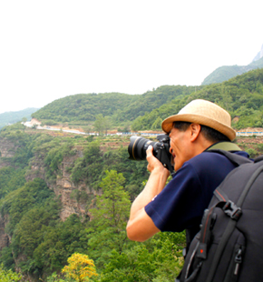
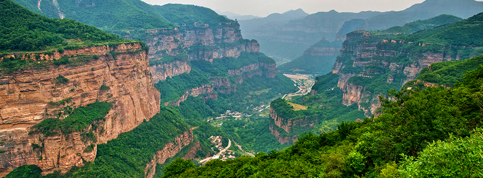
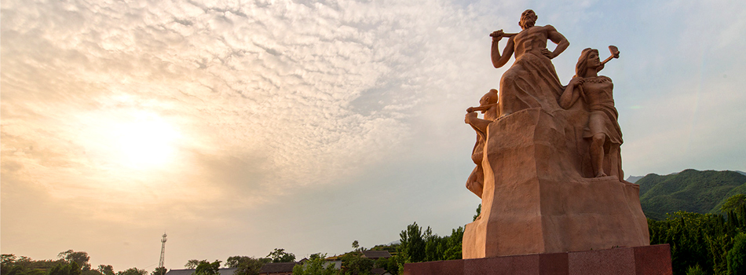
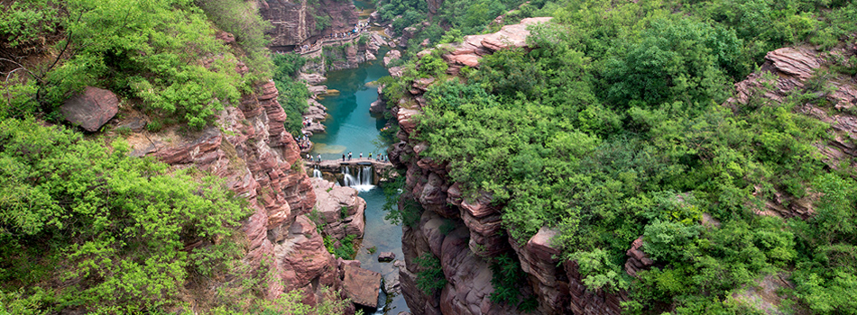
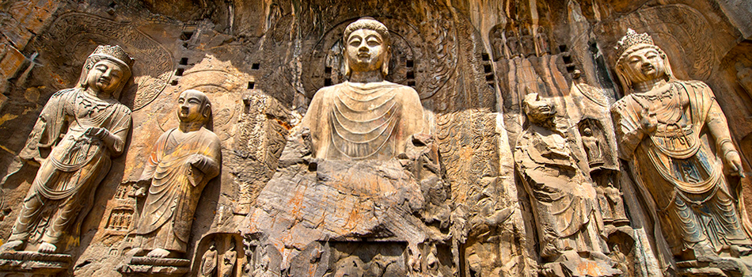

大景小景 快門按不停
河南山水非常壯觀，讓我再一次挑戰大山大水的攝影技巧。像是雲台山的紅石霞、太行山山路跟群山環繞的壯麗，但除了這些景色之外，我個人也推薦一些景區外、半途讓我常’’跳車’’搶拍的地方，像是河南鄉間的小麥田，整片黃色麥子拍起來很漂亮，還有當地居民的石板屋，每一間都很有特色，這些也都是台灣不容易拍到的特點，收獲蠻多的。
太行峽谷
橫跨河南、山西的太行山，擁有鬼斧神工般的大峽谷，以及瀑布深潭，貓路險道、巨石奇觀，開車在其中，入眼的群峰崢嶸讓人心胸開闊，在桃花谷欣賞泉潭的柔美之後，轉入太行山天路的驚心動魄，壯麗奇險目不暇給。

王屋山
王屋山峰巒疊嶂，不但是風景名勝區，也充滿人文色彩，它是愚公移山的故事發生地，也是道教視為「十大洞天之首」的修行聖地，景區內道觀古蹟相當珍貴，還能搭上中國最長纜車（1741米）欣賞鬱鬱蔥蔥的群山之美。

雲臺山
雲臺山以獨具特色的「北方岩溶地貌」，被聯合國列入世界地質公園，彷彿鬼斧神工雕鑿而成的一個巨大盆景，將山水置入其中，的紅石峽，十多億年的造山運動形成丹崖的奇妙景色，潭瀑峽的飛瀑流泉讓人讚嘆不已。

龍門石窟
橫跨河南、山西的太行山，擁有鬼斧神工般的大峽谷，以及瀑布深潭，貓路險道、巨石奇觀，開車在其中，入眼的群峰崢嶸讓人心胸開闊，在桃花谷欣賞泉潭的柔美之後，轉入太行山天路的驚心動魄，壯麗奇險目不暇給。
